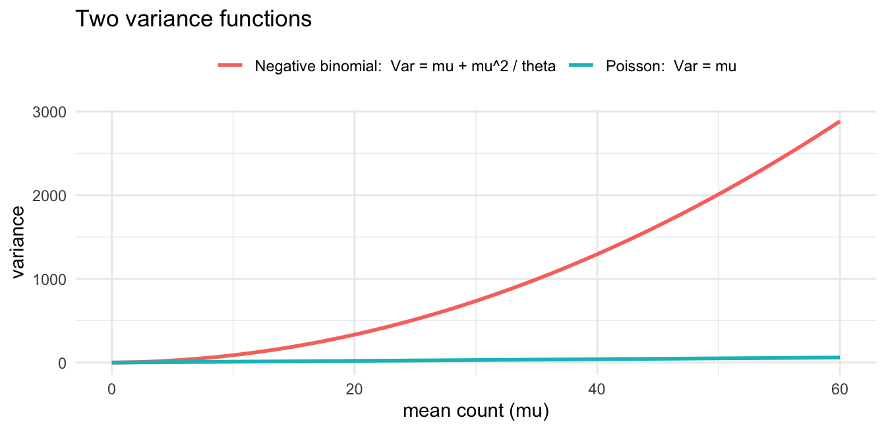

flowchart LR X beta eta f alpha Y X --> eta beta --> eta eta --> f alpha --> f f --> Y
Negative Binomial Regression
When counts vary more than Poisson allows
NoteAbout this page: an AI-first draft
Like the Ordinal Regression page, this was drafted first by an AI assistant (Claude Fable) and is offered as a starting point for me to revise. It is part of closing a gap that opened when the GLM Dashboard Explainer ran ahead of these notes: the dashboard has a full negative-binomial tutorial, while JonStats had nothing on overdispersion at all. The R code is real and runnable; the prose deserves a careful read.
Where this fits
The organising idea of these notes is the two-part model (after King, Tomz & Wittenberg, 2000): a stochastic component for what kind of random thing the response is, and a systematic component for how the predictors move it.
Y_i \sim f(\theta_i, \alpha) \qquad\qquad \theta_i = g(X_i, \beta)
Poisson regression is the standard first model for counts: f is the Poisson distribution and g is the log link. But Poisson comes with a hidden promise that real count data routinely breaks. Negative binomial regression keeps the same systematic side and the same log link — it only changes f, and in doing so it puts the usually-ignored parameter \alpha to work.
Everything on this page is about that \alpha — the dispersion — flowing into f.
The data: counts that won’t sit still
We’ll use MASS::quine: the number of days each of 146 Australian schoolchildren was absent in a year, with predictors for ethnicity, sex, age group and learning ability.
Code
library(MASS)
data(quine)
c(mean = mean(quine$Days), variance = var(quine$Days)) mean variance
16.4589 264.1673 The variance is roughly sixteen times the mean. That single fact is the whole problem, because of a peculiarity of the Poisson distribution.
Why Poisson isn’t enough
The Poisson distribution has exactly one parameter, and it does double duty: the mean and the variance are the same number,
\operatorname{Var}(Y) = \operatorname{E}(Y) = \mu.
That is a strong, testable claim — and counts in the wild rarely honour it. Real count data are usually overdispersed: more variable than their mean, because of unmeasured heterogeneity (some children are simply more absence-prone than their predictors reveal).
We can see the strain directly. If the Poisson model were adequate, its residual deviance should be roughly equal to its residual degrees of freedom:
Code
m_pois <- glm(Days ~ Eth + Sex + Age + Lrn, family = poisson, data = quine)
c(resid_deviance = deviance(m_pois),
df = df.residual(m_pois),
ratio = deviance(m_pois) / df.residual(m_pois))resid_deviance df ratio
1696.70655 139.00000 12.20652 A ratio near twelve, where we wanted one, is the model telling us it cannot account for how spread out the data are. The coefficients may not be badly wrong, but the uncertainty the model reports will be — far too small, as we’ll see.
The negative binomial fix
The negative binomial keeps the mean model \mu_i = \exp(X_i\beta) untouched and adds a single dispersion parameter \theta that lets the variance grow faster than the mean:
\operatorname{Var}(Y) = \mu + \frac{\mu^2}{\theta}.
This is a variance function — a statement about how spread depends on level — and it is the first time in this course that the “uninteresting” stochastic parameter \alpha has become the point of the exercise. As \theta \to \infty the extra term vanishes and the negative binomial collapses back to the Poisson; small \theta means heavy overdispersion. Picturing the two variance functions side by side makes the difference concrete:
Code
library(ggplot2)
m_nb <- glm.nb(Days ~ Eth + Sex + Age + Lrn, data = quine)
theta <- m_nb$theta
mu <- seq(0, 60, length.out = 200)
vf <- rbind(
data.frame(mu = mu, variance = mu, model = "Poisson: Var = mu"),
data.frame(mu = mu, variance = mu + mu^2 / theta, model = "Negative binomial: Var = mu + mu^2 / theta")
)
ggplot(vf, aes(mu, variance, colour = model)) +
geom_line(linewidth = 1) +
labs(x = "mean count (mu)", y = "variance", colour = NULL,
title = "Two variance functions") +
theme_minimal() +
theme(legend.position = "top")
Fitting it in R
MASS::glm.nb fits the negative binomial, estimating \theta alongside the coefficients:
Code
summary(m_nb)
Call:
glm.nb(formula = Days ~ Eth + Sex + Age + Lrn, data = quine,
init.theta = 1.274892646, link = log)
Coefficients:
Estimate Std. Error z value Pr(>|z|)
(Intercept) 2.89458 0.22842 12.672 < 2e-16 ***
EthN -0.56937 0.15333 -3.713 0.000205 ***
SexM 0.08232 0.15992 0.515 0.606710
AgeF1 -0.44843 0.23975 -1.870 0.061425 .
AgeF2 0.08808 0.23619 0.373 0.709211
AgeF3 0.35690 0.24832 1.437 0.150651
LrnSL 0.29211 0.18647 1.566 0.117236
---
Signif. codes: 0 '***' 0.001 '**' 0.01 '*' 0.05 '.' 0.1 ' ' 1
(Dispersion parameter for Negative Binomial(1.2749) family taken to be 1)
Null deviance: 195.29 on 145 degrees of freedom
Residual deviance: 167.95 on 139 degrees of freedom
AIC: 1109.2
Number of Fisher Scoring iterations: 1
Theta: 1.275
Std. Err.: 0.161
2 x log-likelihood: -1093.151 The coefficient block reads exactly like a Poisson fit — same log link, same kind of log-rate coefficients. What is new is the line beneath it reporting the estimated dispersion:
Code
m_nb$theta[1] 1.274893A small \theta like this confirms heavy overdispersion. And the model comparison is decisive — the negative binomial is an enormously better fit for the same predictors:
Code
AIC(m_pois, m_nb) df AIC
m_pois 7 2299.184
m_nb 8 1109.151Why only betas look at betas (again)
A recurring lesson in these notes is that the raw coefficients are seldom the thing to read off directly. With a log link they are log rate ratios, so the interpretable quantity is their exponential:
Code
round(exp(coef(m_nb)), 3)(Intercept) EthN SexM AgeF1 AgeF2 AgeF3
18.076 0.566 1.086 0.639 1.092 1.429
LrnSL
1.339 Each value multiplies the expected count. So switching the Eth indicator multiplies the expected number of absences by about 0.57 (roughly a 43% reduction), holding the other predictors fixed.
But the deeper lesson here is about the numbers you didn’t ask to see — the standard errors. The Poisson and negative binomial models give nearly the same point estimates, yet very different standard errors, because the Poisson model wrongly believes the data are far tidier than they are. Fitting Poisson to overdispersed counts produces standard errors that are too small, t-statistics that are too large, and a procession of significance stars that should not be there. This is the count-data face of the warning in the P-Values and Statistical Significance notes: a model that misstates the variance will misstate your confidence, and overdispersion is one of the commonest ways for that to happen quietly.
Quasi-Poisson and other routes
The negative binomial is not the only response to overdispersion.
- Quasi-Poisson (
family = quasipoisson) takes a blunter approach: it keeps the Poisson mean model but multiplies all the standard errors by an estimated dispersion factor. It fixes the inference without committing to a full distribution for the counts — useful, but it cannot be compared by AIC because it has no likelihood. - Zero-inflation is a different problem again — an excess of zeros over what any single count distribution predicts, handled by a two-part mixture. The dashboard covers it as a separate tutorial; it stretches the framework further than this page does.
Try it interactively
TipTry it interactively
The companion GLM Dashboard Explainer has an interactive negative-binomial walkthrough that lets you watch overdispersion break a Poisson fit and then be absorbed by the dispersion parameter: Tutorial 4: Overdispersed Counts.
Further reading and connections
- The framework. Intro to GLMs introduces the Poisson model and the log link that this page reuses unchanged.
- The inference angle. P-Values and Statistical Significance is the natural companion: overdispersion is a concrete reason a model’s reported certainty can be untrustworthy.
- The interactive companion. The other extended families — gamma, beta, ordinal and zero-inflated counts — have tutorials on the GLM Dashboard Explainer, some not yet written up here.